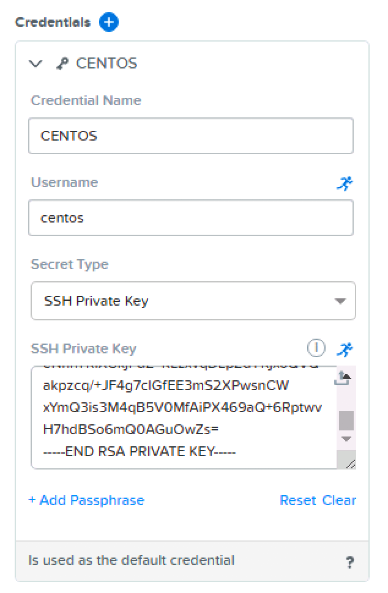
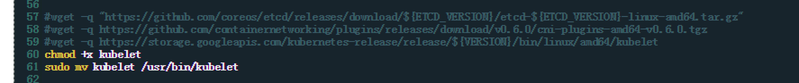
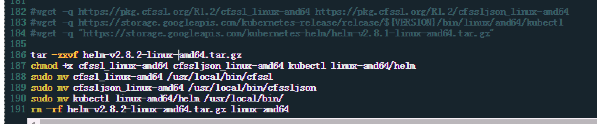
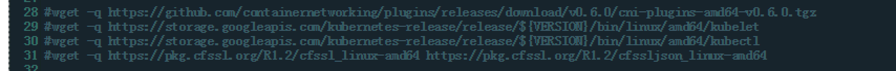
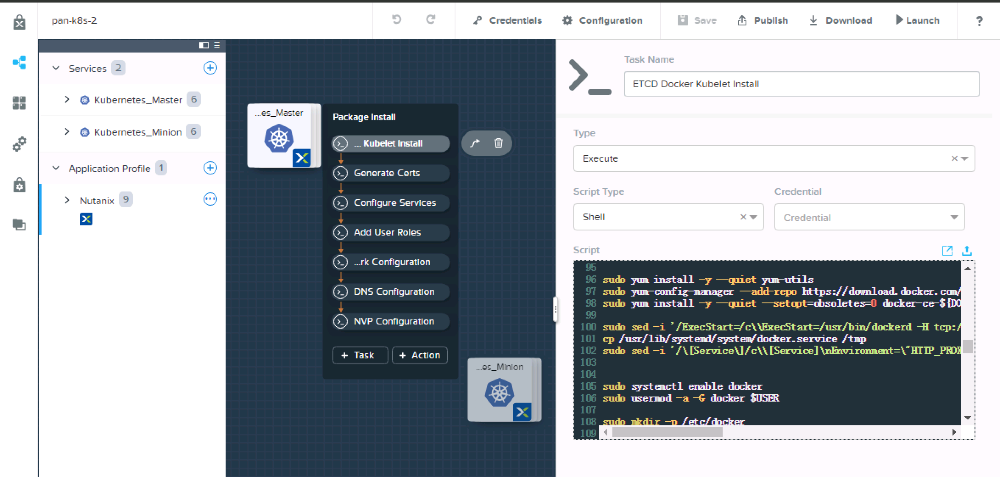
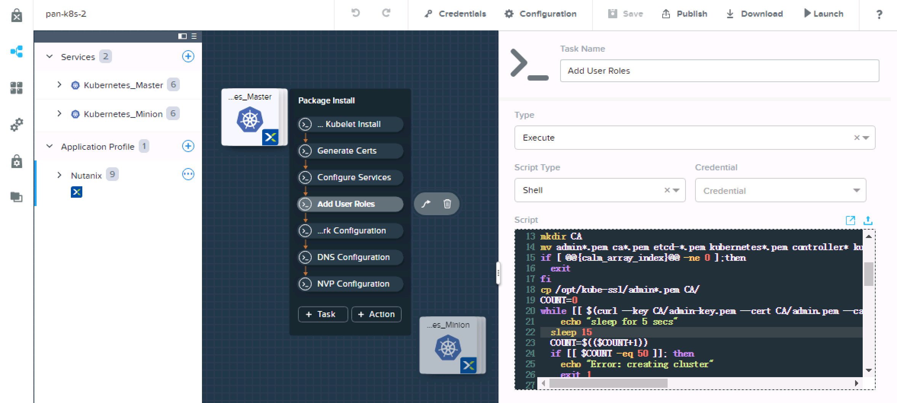
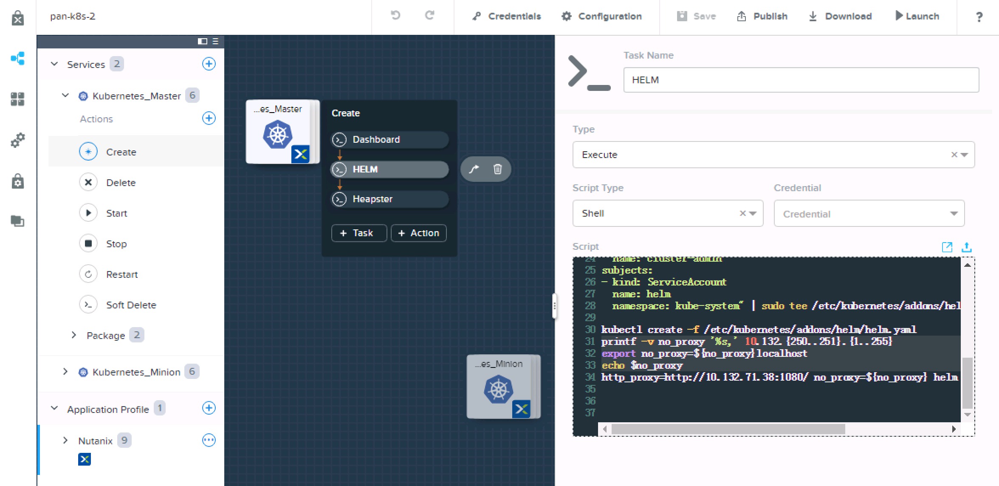
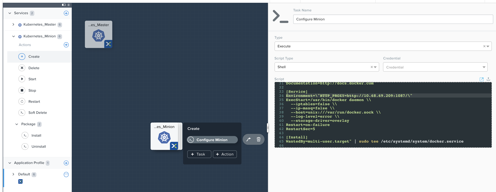
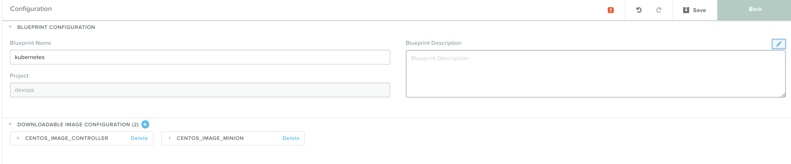
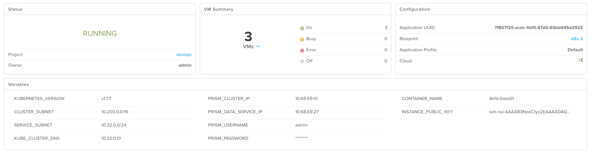

-
- What Is Calm
- Selling Calm
Nutanix Calm
Nutanix Calm Lab
Appendix
Clone k8s 2.0 blueprint to your project
| Name | Value |
|---|---|
| KUBE_CLUSTER_NAME | kube-calm |
| KUBE_IMAGE_TAG | v1.10.5_coreos.0 |
| DOCKER_VERSION | 17.03.2.ce |
| KUBE_CLUSTER_SUBNET | 10.200.0.0/16 |
| KUBE_SERVICE_SUBNET | 10.32.0.0/24 |
| KUBE_DNS_IP | 10.32.0.10 |
| PE_CLUSTER_IP | 10.132.68.55, based on your env |
| PE_DATA_SERVICE_IP | 10.132.68.56, based on your env |
| PE_USERNAME | admin, based on your env |
| PE_PASSWORD | ***, based on your env |
| PE_CONTAINER_NAME | SelfServiceContainer |
| INSTANCE_PUBLIC_KEY | ***, based on your key |

#part1
ETCD_VERSION="v3.2.24"
KUBE_IMAGE_TAG="v1.10.5_coreos.0"
VERSION=$(echo "${KUBELET_IMAGE_TAG}" | tr "_" " " | awk '{print $1}')
wget -q "https://github.com/coreos/etcd/releases/download/${ETCD_VERSION}/etcd-${ETCD_VERSION}-linux-amd64.tar.gz"
wget -q https://github.com/containernetworking/plugins/releases/download/v0.6.0/cni-plugins-amd64-v0.6.0.tgz
wget -q https://storage.googleapis.com/kubernetes-release/release/${VERSION}/bin/linux/amd64/kubelet
#part2
wget -q https://pkg.cfssl.org/R1.2/cfssl_linux-amd64 https://pkg.cfssl.org/R1.2/cfssljson_linux-amd64
wget -q https://storage.googleapis.com/kubernetes-release/release/${VERSION}/bin/linux/amd64/kubectl
wget -q "https://storage.googleapis.com/kubernetes-helm/helm-v2.8.2-linux-amd64.tar.gz"
yum -y update
acli vm.get vm_name to get vmdisk uuid of scsi 0nfs://cvm_ip//SelfServiceContainer/.acropolis/vmdisk/vmdisk_uuid
2.8.2

10.132.71.38sudo sed -i '/ExecStart=/c\\ExecStart=/usr/bin/dockerd -H tcp://0.0.0.0:2375 -H unix:///var/run/docker.sock' /usr/lib/systemd/system/docker.service
#add following lines
cp /usr/lib/systemd/system/docker.service /tmp
sudo sed -i '/\[Service\]/c\\[Service]\nEnvironment=\"HTTP_PROXY=http://10.132.71.38:1080/\"' /usr/lib/systemd/system/docker.service

5 to 15), due to download through proxy is slower than normal.
printf -v no_proxy '%s,' 10.132.249.{1..255}
export no_proxy=${no_proxy}localhost
echo $no_proxy
http_proxy=http://10.132.71.38:1080/ no_proxy=${no_proxy} helm init --service-account helm

login to controller0 to execute kubectl get no
download blueprint HERE
Clone kubernetes blueprint v1.0.0 from market place to your project, edit variables to suite your environment.
Edit default user, add private key to CENTOS. This user will be created with cloud-init script and transfer public key to authorized_keys file (see images above) you need put the private key in here (see image below)
this image is based on default nutanix image (http://download.nutanix.com/calm/CentOS-7-x86_64-GenericCloud.qcow2). I just download some packages i needed first due to network issue in China.
Choose a network with IPAM enabled or has DHCP server in that segment
Choose default user for login check-in
Edit task in minion (K8SM)
Environment=\"HTTP_PROXY=http://10.132.71.38:1080/\"

Edit task in controller (K8SC)


{kind=link}
{kind=link}
{kind=link}
{kind=link}
{kind=link}
{kind=link}
{kind=link}
{kind=link}